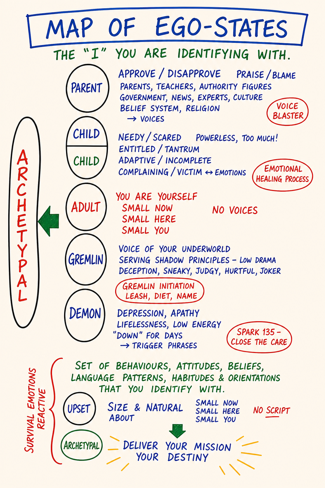

New Map · States, Not Personality
Ego States.
Five distinct locations from which you speak, feel and choose — Parent, Child, Adult, Gremlin, Demon — and the lens that lets you see, in real time, which one is on the line.
Five distinct locations from which you speak, feel and choose — Parent, Child, Adult, Gremlin, Demon — and the lens that lets you see, in real time, which one is on the line.

Five distinct locations from which a human speaks, feels and chooses: Parent. Child. Adult. Gremlin. Demon. Not personality types. Not developmental stages. States — you move in and out of all five, sometimes within a single sentence.
The map is related to the Parent-Child-Adult model from Transactional Analysis but is not the same map. TA does not include the Gremlin or the Demon. PM names both on purpose — without those two locations a learner mistakes gremlin food for adult choice and shadow material for personality.
The Adult is the location from which PM is actually practiced. The others are visited. The point is not to be in Adult all the time — no one is — but to see which state is here, so you can decide whether to speak from it.
A note on scope. This tool is a locator for the Demon — orientation only. Naming Demon as a state is the entry; processing it is a different room. Active Demon process work is held inside a PM trainer container (Gremlin Transformation Training is the longer container) or with a trauma-qualified clinician. Use this map to see the Demon, not to enter it.
Step through the load-bearing distinctions this map draws. Move at the pace of your body, not your reading speed.
Click a card — or focus it and press Enter or Space — to turn it over.
This is the spoken version of the map. Read it through once, then close your eyes and say it in your own words. You teach the map by speaking it.
Five states a human can speak from. Not personality types, not developmental stages — you move in and out of all five, sometimes mid-sentence. The map is the lens that lets you notice which one is on the line right now.
Parent — the internalized voice of authority. Literal parents plus every teacher, religion, culture, boss whose voice you absorbed. Critical Parent judges: you should, good people don't, that's not how this is done. Nurturing Parent takes care of: let me handle that, I've got you. Both useful in their place. Both tyrannical when they are the only state available.
Child — your actual childhood self, still alive in your nervous system. Free Child is spontaneous, curious, alive. Adapted Child learned early that being themselves was unsafe and so it performs, complies, pleases, hides, or rebels. The Adapted Child often runs adult life unnoticed.
Adult — the present-time grown human. Not "mature" in the moralistic sense. The state from which you hold distinctions, contract, choose on purpose, take responsibility. PM is practiced from here.
Gremlin — wants drama, suffering, righteousness, distraction. Speaks sotto voce. They never appreciate you. You're not actually going to do this. Just one more. Passes for thought, for insight, for what you really feel. It is none of those.
Demon — the cold, intelligent, harm-capable part that can use adult resources without remorse. Gremlin feeds; Demon damages. Not a metaphor. Not a creative force. Not a sacred shadow. Every adult has one. The work is not to integrate it — the work is to know yours, so when it stirs you can name it and not let it drive. PM uses Demon precisely because softer words — shadow, dark side, inner critic — let the part pretend to be less dangerous than it is.
The question you take into the next forty years: which state am I speaking from right now?
Not the full Ego State Locator from Day 9 — that practice visits all five states with a bounded Demon visit and belongs inside the Day 9 container with a partner reachable. This is a smaller, solo practice for locating your Adult posture so you can find it again under pressure. Run after Day 9, as a maintenance rep. Stand. Both feet on the floor. Center, ground, drop a bubble (Day 3). Three postures in sequence, noticing the difference in your body.
One or two lines is plenty. Where did your Adult posture sit in your body? Which state — Critical Parent or Adapted Child — was easier to drop into? Where in your week will you most need to find your Adult again?
Saved on this device only, in your browser (localStorage). Nothing is uploaded. No accounts, no telemetry, no external calls except the web-font request.
Take as long as you need.